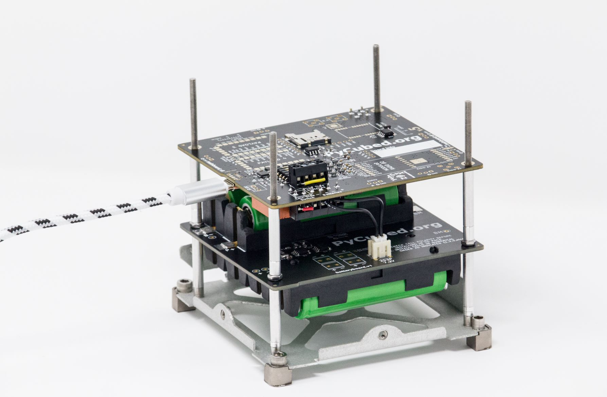

Next Steps
Congrats! You've finished the quick start 🎉
- Completing Example Flight Software should have provided you a good foundation from which to begin building your own mission.
- Below we've addressed some some common questions you might have (from the ❔FAQ)
- Then we conclude with a section describing where to go from here
Frequently Asked Questions
(click each section's arrow to see the answer)
What can PyCubed do?
More than someone can list! To start...
What can CircuitPython do?
- Visit Adafruit CircuitPython Essentials to see a lot of general microcontroller examples using CircuitPython
- To see some of the same examples implemented on the PyCubed, visit:
📚 PyCubed Example Code section.
- To see some of the same examples implemented on the PyCubed, visit:
- As you get more familiar with the board and CircuitPython, occasionally visit:
"Modules" section in the documentation. Read through the list and think about how these functions can be used in your projects.
- See ❔FAQ for more common questions.
- Visit Adafruit CircuitPython Essentials to see a lot of general microcontroller examples using CircuitPython
How do I add new libraries to my PyCubed board?
How to add a CircuitPython library
This is where CircuitPython really shines!
- Find a CircuitPython library online
(there's a section below about
searching for libraries)
- Copy the library file (or folder) to your board's
/PYCUBED/lib/directory
- Restart your board (
Ctrl+Dfrom the REPL)
- Done! 🎉 You can now import the library from your code or the REPL
Everything pertaining to the library is contained in that single file- cool! That means if its a
.pyfile, you can also open it, read the contents to see how that specific library works, and even make edits to suit your needs.
NOTE: the.mpyfile extension means the python library has been compressed. CircuitPython can still read these files, but you wont be able to edit them.Examples for adding a library
→ Example 1
Say you want to add a thermistor to your board for measuring temperature. You have it all hooked up, and now you need some code to check if it's working.
- Search and find a library online like this: Adafruit Thermistor
- Download the
adafruit_thermistor.pyfile- On github you can either clone/download the repo. Or...
- Click the file, then click "Raw"

- Select all the text with
Ctrl+aand copy it withCtrl+c
- Create a new file in the lib folder of your PyCubed board:
/PYCUBED/lib/adafruit_thermistor.py
- Open your new file, paste the copied text, and save
- Done! You can now import the library from your code or the REPL
→ Example 2
Sometimes you'll find CircuitPython libraries online that are a folder instead of just a single
.pyfile. For example, the Adafruit library for PWM motors and servos- Download a zip of the library repo:

- Unzip the folder
- Copy the
adafruit_motordirectory to your/PYCUBED/lib/folder:/PYCUBED/lib/adafruit_motor/
- Done! You can now import the library from your code or the REPL
- Download a zip of the library repo:
💡See 👇 for tips on finding new CircuitPython libraries- Find a CircuitPython library online
Is there a CircuitPython library for my XYZ device?
Libraries make interacting with different devices and hardware much easier! Folks are creating new libraries for things daily, so here are my "order of operations" for libraries:
- NOTE: All default hardware on PyCubed has a hardware library. View the extensive ⭐pycubed.py library info page to see the helper functions and get a feel for how it's set up.
- Occasionally visit the bundled releases page and download the latest
adafruit-circuitpython-bundle-pyzip file. Unzip the download and browse the contents for your device, part number, etc...
- If #2 above doesn't yield a satisfactory result, google "circuitpython YOURDEVICEHERE library" and see what comes up.
- In MANY cases another library can be used to operate your device with some (if any) modifications. Skim the datasheet of your part and look for similar devices, protocols, part numbers, etc... in the library bundle referenced above.
Can I connect my custom board/payload/widget?
Probably! There are many GPIO pins exposed on PyCubed, but the primary means of interfacing with external boards/payloads are the 4 surface-mount payload slots or 2 payload header slots.
What else is needed to have a functioning CubeSat?
At a minimum, the CubeSat would need:
- PyCubed mainboard
- Battery
- Frame/shell
- Solar cells
What batteries should I use?
- 2S__P Li-Ion battery pack (usually containing 18650 cells).
The regulator can take an input voltage of 4.5V to 18V, which accommodates a wide range of batteries. However, the battery charging circuit is configured for a "2S" battery. The charging circuit can be reconfigured, though! See Battery Charging Configurations.
- See ⚙️Battery Board Overview for the PyCubed battery board which makes it easy to use Li-ion batteries in CubeSat structures.
Do I need an antenna for the radio?
Yes! See 📡Antennas for a full discussion
How do I know what to call the microcontroller pins in my program?
CircuitPython makes this easy! In the REPL, enter:
>>> import board >>> dir(board)Additional resources:
Does CircuitPython have interrupts?
Interrupts are not currently supported in CP, but it's in development. If you want to use hardware interrupts on a project right now, it requires writing a C module that gets compiled and incorporated into the PyCubed firmware when it's 🔨Building the PyCubed Firmware from Source.
What can PyCubed NOT do?
It may sound too good to be true compared to commercial options available, but as the field of embedded electronics continues to boom, hardware is becoming increasingly integrated and widely used across engineering disciplines. PyCubed leverages these trends, augmented by informed radiation-testing experiments as needed.
PyCubed mainboard does not have:
- A traditional attitude determination and control(ADCS) unit. However, PyCubed has an excellent IMU, and if a traditional ADCS is needed it can be added to to the spacecraft and interfaced to PyCubed using the abundant payload and GPIO connectors.
- A standard PC/104 bus connector. But there's nothing saying you can't fork the hardware repo and add your own!
Do you have complete software examples for a simple CubeSat mission?
You bet! Visit Example Flight Software
How do I update my board with the latest CircuitPython?
How can I get more help?
- See the PyCubed ❓Troubleshooting section if you're having trouble with your board
- Make sure you've worked through the ⚡Hands-On Quick Start
- Ask questions on the PyCubed Forums!
Where to go next?
- We suggest visiting 🗃️All PyCubed Resources to see all the individual guides on PyCubed features.
- Look at example PyCubed setups: 🏗️Benchtop Usage & CubeSat Structures
- If you haven't already, make sure you work through all the pages in Example Flight Software
- For smaller bite-size software examples, see: 🖥️Code Examples for more details on using sensors, radios, etc...
- Try tackling one of the items on the Features to add yourself list from the advanced beep-sat software example.
- Visit the PyCubed Forums to provide feedback or get help.